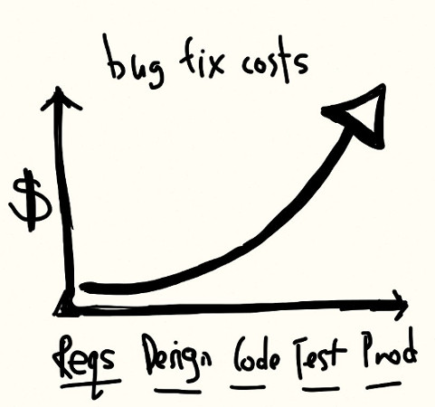
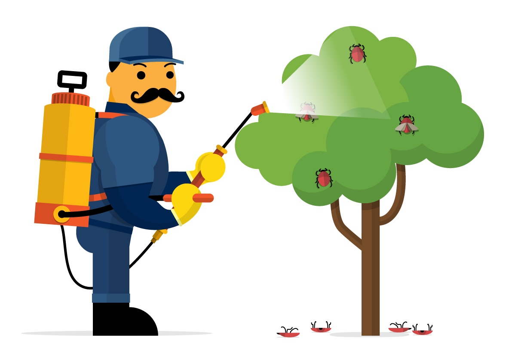
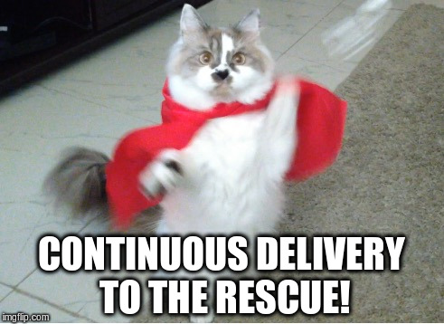
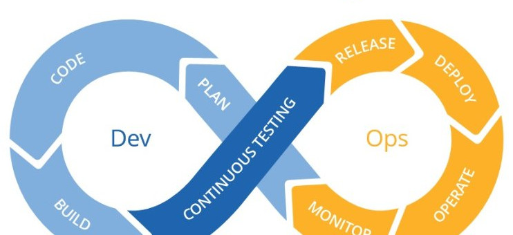
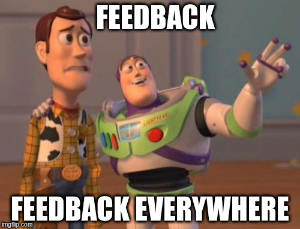
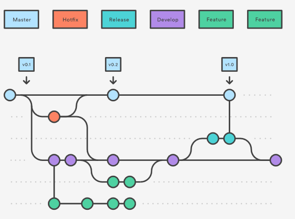
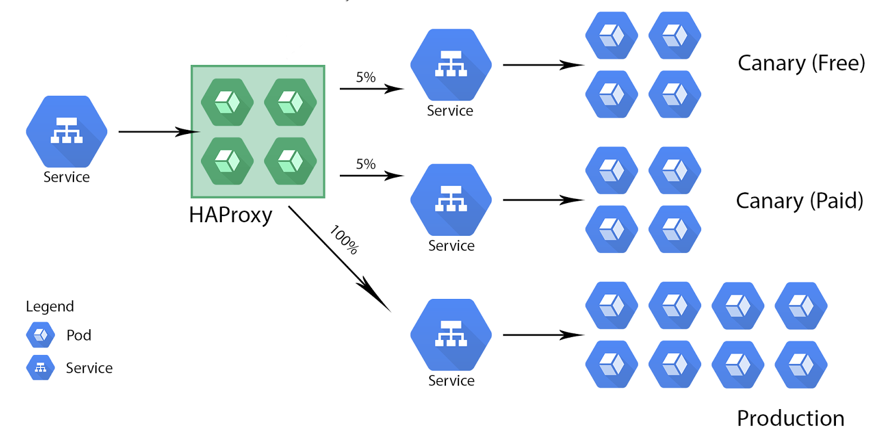

Continuous Delivery
Available on: http://pokoli.github.io/continuous-delivery
Who am I?
Sergi Almacellas Abellana
- (Python ♥) Programmer
- Open source enthusiast
- Automation Maniac
- Human
What all humans have in common?
Bug Fixing Costs
What I do with my bugs?
What I do when I fixed my bugs?

But it takes ages to deploy to production
We do it in 5 minutes
How to improve our deployments?
What is continuous delivery?
The Art of producing software in short cycles, ensuring that can be realiably released at any time
Continuous delivery agile principles
- Delivery Early
- Delivery Frequently
- Always Working software
Continuous Delivery Requirements
- Version Control System
- Automatic Testing
- Continuous Integration
- Deployment Script(s)
Nice to have tools
- Issue Tracker
- Code Review
- Automated Merges
- Monitoring
- Error tracking
How does it help?
But more deploys will introduce more bugs?
More deploys -> less bugs?
- No deployment if CI is broken
- Automation mitigates human errors
- Smaller Changes are easier to test
- Better testing from developers
- Side Effects are detected (and fixed) faster
But... if something goes wrong?
But... if something goes wrong?
But... if something goes wrong?
Deployment to Multiple Environments
But... if something goes wrong?
Canary deployments
Summary: Results
- Developers
- Quality Team
- Support Team
- Product Manager
- Users
- Managers
Summary: (Real) Results
- More Quality control
- Find problems earlier
- Prevent regressions
- Faster Development
- Faster Feedback
- Reduce change fear
Thank you!
The presentation code is avaiable on